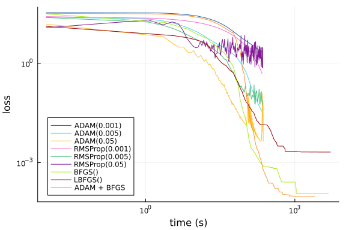
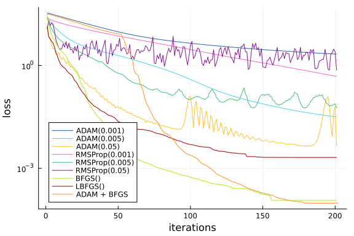

Diffusion Equation Physics-Informed Neural Network (PINN) Optimizer Benchmarks
Adapted from NeuralPDE: Automating Physics-Informed Neural Networks (PINNs) with Error Approximations. Uses the NeuralPDE.jl library from the SciML Scientific Machine Learning Open Source Organization for the implementation of physics-informed neural networks (PINNs) and other science-guided AI techniques.
Setup
using NeuralPDE, ModelingToolkit, Optimization, OptimizationOptimJL
using Lux, Plots, OptimizationOptimisers
import ModelingToolkit: Interval, infimum, supremumfunction solve(opt)
strategy = QuadratureTraining()
@parameters x t
@variables u(..)
Dt = Differential(t)
Dxx = Differential(x)^2
eq = Dt(u(x,t)) - Dxx(u(x,t)) ~ -exp(-t) * (sin(pi * x) - pi^2 * sin(pi * x))
bcs = [u(x,0) ~ sin(pi*x),
u(-1,t) ~ 0.,
u(1,t) ~ 0.]
domains = [x ∈ Interval(-1.0,1.0),
t ∈ Interval(0.0,1.0)]
chain = Lux.Chain(Lux.Dense(2,18,tanh),Lux.Dense(18,18,tanh),Lux.Dense(18,1))
discretization = PhysicsInformedNN(chain,strategy)
indvars = [x, t] #physically independent variables
depvars = [u(x,t)] #dependent (target) variable
loss = []
initial_time = nothing
times = []
cb_ = function (p,l)
if initial_time == nothing
initial_time = time()
end
push!(times, time() - initial_time)
#println("Current loss for $opt is: $l")
push!(loss, l)
# println(l )
# println(time() - initial_time)
return false
end
@named pde_system = PDESystem(eq, bcs, domains, indvars, depvars)
prob = discretize(pde_system, discretization)
if opt == "both"
res = Optimization.solve(prob, ADAM(); callback = cb_, maxiters=50)
prob = remake(prob,u0=res.minimizer)
res = Optimization.solve(prob, BFGS(); callback = cb_, maxiters=150)
else
res = Optimization.solve(prob, opt; callback = cb_, maxiters=200)
end
times[1] = 0.01
return loss, times #add numeric solution
endsolve (generic function with 1 method)opt1 = Optimisers.ADAM()
opt2 = Optimisers.ADAM(0.005)
opt3 = Optimisers.ADAM(0.05)
opt4 = Optimisers.RMSProp()
opt5 = Optimisers.RMSProp(0.005)
opt6 = Optimisers.RMSProp(0.05)
opt7 = OptimizationOptimJL.BFGS()
opt8 = OptimizationOptimJL.LBFGS()Optim.LBFGS{Nothing, LineSearches.InitialStatic{Float64}, LineSearches.Hage
rZhang{Float64, Base.RefValue{Bool}}, Optim.var"#19#21"}(10, LineSearches.I
nitialStatic{Float64}
alpha: Float64 1.0
scaled: Bool false
, LineSearches.HagerZhang{Float64, Base.RefValue{Bool}}
delta: Float64 0.1
sigma: Float64 0.9
alphamax: Float64 Inf
rho: Float64 5.0
epsilon: Float64 1.0e-6
gamma: Float64 0.66
linesearchmax: Int64 50
psi3: Float64 0.1
display: Int64 0
mayterminate: Base.RefValue{Bool}
cache: Nothing nothing
, nothing, Optim.var"#19#21"(), Optim.Flat(), true)Solve
loss_1, times_1 = solve(opt1)
loss_2, times_2 = solve(opt2)
loss_3, times_3 = solve(opt3)
loss_4, times_4 = solve(opt4)
loss_5, times_5 = solve(opt5)
loss_6, times_6 = solve(opt6)
loss_7, times_7 = solve(opt7)
loss_8, times_8 = solve(opt8)
loss_9, times_9 = solve("both")(Any[24.317804723969076, 23.9001575205749, 23.491478703584896, 23.092127020
22239, 22.701095780924703, 22.319097668686457, 21.945944107580587, 21.57815
0848683784, 21.221754279199573, 20.876542597151253 … 0.000105970330483780
39, 0.00010597002787711917, 0.00010596997540251108, 0.0001059699940293263,
0.00010325709807440745, 0.00010325592868915195, 0.0001032557680762469, 0.00
010325576304568087, 0.00010325564452533232, 0.00010325567722296572], Any[0.
01, 1.0575439929962158, 2.104620933532715, 3.169696092605591, 4.23468708992
0044, 5.291461944580078, 6.349251985549927, 7.411691904067993, 8.4930179119
1101, 9.563134908676147 … 3240.5042860507965, 3317.148854970932, 3397.142
2789096832, 3476.0737318992615, 3538.080948114395, 3604.443092107773, 3676.
775846004486, 3757.2376461029053, 3847.9747219085693, 3938.5548479557037])Results
p = plot([times_1, times_2, times_3, times_4, times_5, times_6, times_7, times_8, times_9], [loss_1, loss_2, loss_3, loss_4, loss_5, loss_6, loss_7, loss_8, loss_9],xlabel="time (s)", ylabel="loss", xscale=:log10, yscale=:log10, labels=["ADAM(0.001)" "ADAM(0.005)" "ADAM(0.05)" "RMSProp(0.001)" "RMSProp(0.005)" "RMSProp(0.05)" "BFGS()" "LBFGS()" "ADAM + BFGS"], legend=:bottomleft, linecolor=["#2660A4" "#4CD0F4" "#FEC32F" "#F763CD" "#44BD79" "#831894" "#A6ED18" "#980000" "#FF912B"])
p = plot([loss_1, loss_2, loss_3, loss_4, loss_5, loss_6, loss_7, loss_8, loss_9], xlabel="iterations", ylabel="loss", yscale=:log10, labels=["ADAM(0.001)" "ADAM(0.005)" "ADAM(0.05)" "RMSProp(0.001)" "RMSProp(0.005)" "RMSProp(0.05)" "BFGS()" "LBFGS()" "ADAM + BFGS"], legend=:bottomleft, linecolor=["#2660A4" "#4CD0F4" "#FEC32F" "#F763CD" "#44BD79" "#831894" "#A6ED18" "#980000" "#FF912B"])
@show loss_1[end], loss_2[end], loss_3[end], loss_4[end], loss_5[end], loss_6[end], loss_7[end], loss_8[end], loss_9[end](loss_1[end], loss_2[end], loss_3[end], loss_4[end], loss_5[end], loss_6[en
d], loss_7[end], loss_8[end], loss_9[end]) = (0.9606105838252492, 0.0641169
331828903, 0.0080270608039658, 0.24634339816908263, 0.07933039700890772, 0.
43419288927643257, 7.769985913730343e-5, 0.0006555265185314582, 0.000103255
67722296572)
(0.9606105838252492, 0.0641169331828903, 0.0080270608039658, 0.246343398169
08263, 0.07933039700890772, 0.43419288927643257, 7.769985913730343e-5, 0.00
06555265185314582, 0.00010325567722296572)Appendix
These benchmarks are a part of the SciMLBenchmarks.jl repository, found at: https://github.com/SciML/SciMLBenchmarks.jl. For more information on high-performance scientific machine learning, check out the SciML Open Source Software Organization https://sciml.ai.
To locally run this benchmark, do the following commands:
using SciMLBenchmarks
SciMLBenchmarks.weave_file("benchmarks/PINNOptimizers","1d_diffusion.jmd")Computer Information:
Julia Version 1.10.7
Commit 4976d05258e (2024-11-26 15:57 UTC)
Build Info:
Official https://julialang.org/ release
Platform Info:
OS: Linux (x86_64-linux-gnu)
CPU: 128 × AMD EPYC 7502 32-Core Processor
WORD_SIZE: 64
LIBM: libopenlibm
LLVM: libLLVM-15.0.7 (ORCJIT, znver2)
Threads: 1 default, 0 interactive, 1 GC (on 128 virtual cores)
Environment:
JULIA_CPU_THREADS = 128
JULIA_DEPOT_PATH = /cache/julia-buildkite-plugin/depots/5b300254-1738-4989-ae0a-f4d2d937f953
Package Information:
Status `/cache/build/exclusive-amdci1-0/julialang/scimlbenchmarks-dot-jl/benchmarks/PINNOptimizers/Project.toml`
⌃ [b2108857] Lux v1.2.3
⌃ [961ee093] ModelingToolkit v9.60.0
[315f7962] NeuralPDE v5.17.0
[7f7a1694] Optimization v4.0.5
[36348300] OptimizationOptimJL v0.4.1
[42dfb2eb] OptimizationOptimisers v0.3.7
[91a5bcdd] Plots v1.40.9
[31c91b34] SciMLBenchmarks v0.1.3
Info Packages marked with ⌃ have new versions available and may be upgradable.And the full manifest:
Status `/cache/build/exclusive-amdci1-0/julialang/scimlbenchmarks-dot-jl/benchmarks/PINNOptimizers/Manifest.toml`
[47edcb42] ADTypes v1.11.0
[621f4979] AbstractFFTs v1.5.0
[80f14c24] AbstractMCMC v5.6.0
[1520ce14] AbstractTrees v0.4.5
[7d9f7c33] Accessors v0.1.41
[79e6a3ab] Adapt v4.1.1
[0bf59076] AdvancedHMC v0.6.4
[66dad0bd] AliasTables v1.1.3
[dce04be8] ArgCheck v2.4.0
[ec485272] ArnoldiMethod v0.4.0
[4fba245c] ArrayInterface v7.18.0
[4c555306] ArrayLayouts v1.11.0
[a9b6321e] Atomix v1.0.1
[13072b0f] AxisAlgorithms v1.1.0
[39de3d68] AxisArrays v0.4.7
[198e06fe] BangBang v0.4.3
[9718e550] Baselet v0.1.1
[e2ed5e7c] Bijections v0.1.9
[d1d4a3ce] BitFlags v0.1.9
[62783981] BitTwiddlingConvenienceFunctions v0.1.6
[8e7c35d0] BlockArrays v1.3.0
[70df07ce] BracketingNonlinearSolve v1.1.0
[fa961155] CEnum v0.5.0
[2a0fbf3d] CPUSummary v0.2.6
[00ebfdb7] CSTParser v3.4.3
[082447d4] ChainRules v1.72.2
[d360d2e6] ChainRulesCore v1.25.1
[fb6a15b2] CloseOpenIntervals v0.1.13
[944b1d66] CodecZlib v0.7.6
[35d6a980] ColorSchemes v3.27.1
[3da002f7] ColorTypes v0.12.0
[c3611d14] ColorVectorSpace v0.11.0
[5ae59095] Colors v0.13.0
[861a8166] Combinatorics v1.0.2
[a80b9123] CommonMark v0.8.15
[38540f10] CommonSolve v0.2.4
[bbf7d656] CommonSubexpressions v0.3.1
[f70d9fcc] CommonWorldInvalidations v1.0.0
[34da2185] Compat v4.16.0
[b0b7db55] ComponentArrays v0.15.22
[b152e2b5] CompositeTypes v0.1.4
[a33af91c] CompositionsBase v0.1.2
[2569d6c7] ConcreteStructs v0.2.3
[f0e56b4a] ConcurrentUtilities v2.4.3
[8f4d0f93] Conda v1.10.2
[88cd18e8] ConsoleProgressMonitor v0.1.2
[187b0558] ConstructionBase v1.5.8
[d38c429a] Contour v0.6.3
[adafc99b] CpuId v0.3.1
[a8cc5b0e] Crayons v4.1.1
[667455a9] Cubature v1.5.1
[9a962f9c] DataAPI v1.16.0
[864edb3b] DataStructures v0.18.20
[e2d170a0] DataValueInterfaces v1.0.0
[244e2a9f] DefineSingletons v0.1.2
[8bb1440f] DelimitedFiles v1.9.1
[2b5f629d] DiffEqBase v6.161.0
⌃ [459566f4] DiffEqCallbacks v4.1.0
⌃ [77a26b50] DiffEqNoiseProcess v5.24.0
[163ba53b] DiffResults v1.1.0
[b552c78f] DiffRules v1.15.1
[a0c0ee7d] DifferentiationInterface v0.6.30
[8d63f2c5] DispatchDoctor v0.4.19
[31c24e10] Distributions v0.25.117
[ffbed154] DocStringExtensions v0.9.3
[5b8099bc] DomainSets v0.7.14
[7c1d4256] DynamicPolynomials v0.6.1
[06fc5a27] DynamicQuantities v1.4.0
[4e289a0a] EnumX v1.0.4
[f151be2c] EnzymeCore v0.8.8
[460bff9d] ExceptionUnwrapping v0.1.11
[e2ba6199] ExprTools v0.1.10
⌅ [6b7a57c9] Expronicon v0.8.5
[c87230d0] FFMPEG v0.4.2
[7a1cc6ca] FFTW v1.8.0
[7034ab61] FastBroadcast v0.3.5
[9aa1b823] FastClosures v0.3.2
[29a986be] FastLapackInterface v2.0.4
[a4df4552] FastPower v1.1.1
[1a297f60] FillArrays v1.13.0
[64ca27bc] FindFirstFunctions v1.4.1
[6a86dc24] FiniteDiff v2.26.2
[53c48c17] FixedPointNumbers v0.8.5
[1fa38f19] Format v1.3.7
[f6369f11] ForwardDiff v0.10.38
[069b7b12] FunctionWrappers v1.1.3
[77dc65aa] FunctionWrappersWrappers v0.1.3
⌅ [d9f16b24] Functors v0.4.12
[0c68f7d7] GPUArrays v11.2.1
[46192b85] GPUArraysCore v0.2.0
⌃ [28b8d3ca] GR v0.73.10
[c145ed77] GenericSchur v0.5.4
[d7ba0133] Git v1.3.1
[c27321d9] Glob v1.3.1
[86223c79] Graphs v1.12.0
[42e2da0e] Grisu v1.0.2
[19dc6840] HCubature v1.7.0
[cd3eb016] HTTP v1.10.15
[076d061b] HashArrayMappedTries v0.2.0
[eafb193a] Highlights v0.5.3
[3e5b6fbb] HostCPUFeatures v0.1.17
[0e44f5e4] Hwloc v3.3.0
[34004b35] HypergeometricFunctions v0.3.25
[7073ff75] IJulia v1.26.0
[7869d1d1] IRTools v0.4.14
[615f187c] IfElse v0.1.1
[d25df0c9] Inflate v0.1.5
[22cec73e] InitialValues v0.3.1
[505f98c9] InplaceOps v0.3.0
[18e54dd8] IntegerMathUtils v0.1.2
[de52edbc] Integrals v4.5.0
[a98d9a8b] Interpolations v0.15.1
[8197267c] IntervalSets v0.7.10
[3587e190] InverseFunctions v0.1.17
[92d709cd] IrrationalConstants v0.2.2
[c8e1da08] IterTools v1.10.0
[82899510] IteratorInterfaceExtensions v1.0.0
[1019f520] JLFzf v0.1.9
[692b3bcd] JLLWrappers v1.7.0
[682c06a0] JSON v0.21.4
[98e50ef6] JuliaFormatter v1.0.62
[ccbc3e58] JumpProcesses v9.14.1
[ef3ab10e] KLU v0.6.0
[63c18a36] KernelAbstractions v0.9.31
[5ab0869b] KernelDensity v0.6.9
[ba0b0d4f] Krylov v0.9.9
[5be7bae1] LBFGSB v0.4.1
[929cbde3] LLVM v9.1.3
[b964fa9f] LaTeXStrings v1.4.0
[23fbe1c1] Latexify v0.16.5
[73f95e8e] LatticeRules v0.0.1
[10f19ff3] LayoutPointers v0.1.17
[5078a376] LazyArrays v2.3.2
[1d6d02ad] LeftChildRightSiblingTrees v0.2.0
[87fe0de2] LineSearch v0.1.4
[d3d80556] LineSearches v7.3.0
[7ed4a6bd] LinearSolve v2.38.0
[6fdf6af0] LogDensityProblems v2.1.2
[996a588d] LogDensityProblemsAD v1.13.0
[2ab3a3ac] LogExpFunctions v0.3.29
[e6f89c97] LoggingExtras v1.1.0
[bdcacae8] LoopVectorization v0.12.171
⌃ [b2108857] Lux v1.2.3
⌃ [bb33d45b] LuxCore v1.1.0
⌃ [82251201] LuxLib v1.3.7
[c7f686f2] MCMCChains v6.0.7
[be115224] MCMCDiagnosticTools v0.3.14
⌃ [7e8f7934] MLDataDevices v1.5.3
[e80e1ace] MLJModelInterface v1.11.0
[d8e11817] MLStyle v0.4.17
[1914dd2f] MacroTools v0.5.15
[d125e4d3] ManualMemory v0.1.8
[bb5d69b7] MaybeInplace v0.1.4
[739be429] MbedTLS v1.1.9
[442fdcdd] Measures v0.3.2
[128add7d] MicroCollections v0.2.0
[e1d29d7a] Missings v1.2.0
⌃ [961ee093] ModelingToolkit v9.60.0
[4886b29c] MonteCarloIntegration v0.2.0
[0987c9cc] MonteCarloMeasurements v1.4.0
[46d2c3a1] MuladdMacro v0.2.4
[102ac46a] MultivariatePolynomials v0.5.7
[ffc61752] Mustache v1.0.20
[d8a4904e] MutableArithmetics v1.6.2
[d41bc354] NLSolversBase v7.8.3
[872c559c] NNlib v0.9.27
[77ba4419] NaNMath v1.0.3
[c020b1a1] NaturalSort v1.0.0
[315f7962] NeuralPDE v5.17.0
[8913a72c] NonlinearSolve v4.3.0
[be0214bd] NonlinearSolveBase v1.4.0
[5959db7a] NonlinearSolveFirstOrder v1.2.0
[9a2c21bd] NonlinearSolveQuasiNewton v1.1.0
[26075421] NonlinearSolveSpectralMethods v1.1.0
[6fe1bfb0] OffsetArrays v1.15.0
[4d8831e6] OpenSSL v1.4.3
[429524aa] Optim v1.10.0
⌅ [3bd65402] Optimisers v0.3.4
[7f7a1694] Optimization v4.0.5
[bca83a33] OptimizationBase v2.4.0
[36348300] OptimizationOptimJL v0.4.1
[42dfb2eb] OptimizationOptimisers v0.3.7
[bac558e1] OrderedCollections v1.7.0
[90014a1f] PDMats v0.11.32
[d96e819e] Parameters v0.12.3
[69de0a69] Parsers v2.8.1
[b98c9c47] Pipe v1.3.0
[ccf2f8ad] PlotThemes v3.3.0
[995b91a9] PlotUtils v1.4.3
[91a5bcdd] Plots v1.40.9
[e409e4f3] PoissonRandom v0.4.4
[f517fe37] Polyester v0.7.16
[1d0040c9] PolyesterWeave v0.2.2
[85a6dd25] PositiveFactorizations v0.2.4
[d236fae5] PreallocationTools v0.4.24
[aea7be01] PrecompileTools v1.2.1
[21216c6a] Preferences v1.4.3
[08abe8d2] PrettyTables v2.4.0
[27ebfcd6] Primes v0.5.6
[33c8b6b6] ProgressLogging v0.1.4
[92933f4c] ProgressMeter v1.10.2
[43287f4e] PtrArrays v1.3.0
[1fd47b50] QuadGK v2.11.1
[8a4e6c94] QuasiMonteCarlo v0.3.3
[74087812] Random123 v1.7.0
[e6cf234a] RandomNumbers v1.6.0
[b3c3ace0] RangeArrays v0.3.2
[c84ed2f1] Ratios v0.4.5
[c1ae055f] RealDot v0.1.0
[3cdcf5f2] RecipesBase v1.3.4
[01d81517] RecipesPipeline v0.6.12
[731186ca] RecursiveArrayTools v3.27.4
[f2c3362d] RecursiveFactorization v0.2.23
[189a3867] Reexport v1.2.2
[05181044] RelocatableFolders v1.0.1
[ae029012] Requires v1.3.0
[ae5879a3] ResettableStacks v1.1.1
[79098fc4] Rmath v0.8.0
[7e49a35a] RuntimeGeneratedFunctions v0.5.13
[9dfe8606] SCCNonlinearSolve v1.0.0
[94e857df] SIMDTypes v0.1.0
[476501e8] SLEEFPirates v0.6.43
⌃ [0bca4576] SciMLBase v2.71.0
[31c91b34] SciMLBenchmarks v0.1.3
[19f34311] SciMLJacobianOperators v0.1.1
[c0aeaf25] SciMLOperators v0.3.12
[53ae85a6] SciMLStructures v1.6.1
[30f210dd] ScientificTypesBase v3.0.0
[7e506255] ScopedValues v1.3.0
[6c6a2e73] Scratch v1.2.1
[efcf1570] Setfield v1.1.1
[992d4aef] Showoff v1.0.3
[777ac1f9] SimpleBufferStream v1.2.0
[727e6d20] SimpleNonlinearSolve v2.1.0
[699a6c99] SimpleTraits v0.9.4
[ce78b400] SimpleUnPack v1.1.0
[ed01d8cd] Sobol v1.5.0
[b85f4697] SoftGlobalScope v1.1.0
[a2af1166] SortingAlgorithms v1.2.1
[9f842d2f] SparseConnectivityTracer v0.6.9
[dc90abb0] SparseInverseSubset v0.1.2
[0a514795] SparseMatrixColorings v0.4.10
[e56a9233] Sparspak v0.3.9
[276daf66] SpecialFunctions v2.5.0
[171d559e] SplittablesBase v0.1.15
[860ef19b] StableRNGs v1.0.2
[aedffcd0] Static v1.1.1
[0d7ed370] StaticArrayInterface v1.8.0
[90137ffa] StaticArrays v1.9.10
[1e83bf80] StaticArraysCore v1.4.3
[64bff920] StatisticalTraits v3.4.0
[82ae8749] StatsAPI v1.7.0
[2913bbd2] StatsBase v0.34.4
[4c63d2b9] StatsFuns v1.3.2
[7792a7ef] StrideArraysCore v0.5.7
[69024149] StringEncodings v0.3.7
[892a3eda] StringManipulation v0.4.0
⌃ [09ab397b] StructArrays v0.6.21
[2efcf032] SymbolicIndexingInterface v0.3.37
[19f23fe9] SymbolicLimits v0.2.2
[d1185830] SymbolicUtils v3.11.0
[0c5d862f] Symbolics v6.23.0
[3783bdb8] TableTraits v1.0.1
[bd369af6] Tables v1.12.0
[62fd8b95] TensorCore v0.1.1
[8ea1fca8] TermInterface v2.0.0
[5d786b92] TerminalLoggers v0.1.7
[1c621080] TestItems v1.0.0
[8290d209] ThreadingUtilities v0.5.2
[a759f4b9] TimerOutputs v0.5.26
[0796e94c] Tokenize v0.5.29
[3bb67fe8] TranscodingStreams v0.11.3
[28d57a85] Transducers v0.4.84
[d5829a12] TriangularSolve v0.2.1
[410a4b4d] Tricks v0.1.10
[781d530d] TruncatedStacktraces v1.4.0
[5c2747f8] URIs v1.5.1
[3a884ed6] UnPack v1.0.2
[1cfade01] UnicodeFun v0.4.1
[1986cc42] Unitful v1.22.0
[45397f5d] UnitfulLatexify v1.6.4
[a7c27f48] Unityper v0.1.6
[013be700] UnsafeAtomics v0.3.0
[41fe7b60] Unzip v0.2.0
[3d5dd08c] VectorizationBase v0.21.71
[81def892] VersionParsing v1.3.0
[897b6980] WeakValueDicts v0.1.0
[44d3d7a6] Weave v0.10.12
[d49dbf32] WeightInitializers v1.1.1
[efce3f68] WoodburyMatrices v1.0.0
[ddb6d928] YAML v0.4.12
[c2297ded] ZMQ v1.4.0
⌅ [e88e6eb3] Zygote v0.6.75
⌃ [700de1a5] ZygoteRules v0.2.5
[6e34b625] Bzip2_jll v1.0.8+4
[83423d85] Cairo_jll v1.18.2+1
[7bc98958] Cubature_jll v1.0.5+0
[ee1fde0b] Dbus_jll v1.14.10+0
[2702e6a9] EpollShim_jll v0.0.20230411+1
[2e619515] Expat_jll v2.6.4+3
⌅ [b22a6f82] FFMPEG_jll v4.4.4+1
[f5851436] FFTW_jll v3.3.10+3
[a3f928ae] Fontconfig_jll v2.15.0+0
[d7e528f0] FreeType2_jll v2.13.3+1
[559328eb] FriBidi_jll v1.0.16+0
[0656b61e] GLFW_jll v3.4.0+2
⌅ [d2c73de3] GR_jll v0.73.10+0
[78b55507] Gettext_jll v0.21.0+0
[f8c6e375] Git_jll v2.47.1+0
[7746bdde] Glib_jll v2.82.4+0
[3b182d85] Graphite2_jll v1.3.14+1
[2e76f6c2] HarfBuzz_jll v8.5.0+0
[e33a78d0] Hwloc_jll v2.11.2+3
⌅ [1d5cc7b8] IntelOpenMP_jll v2024.2.1+0
[aacddb02] JpegTurbo_jll v3.1.1+0
[c1c5ebd0] LAME_jll v3.100.2+0
[88015f11] LERC_jll v4.0.1+0
[dad2f222] LLVMExtra_jll v0.0.34+0
[1d63c593] LLVMOpenMP_jll v18.1.7+0
[dd4b983a] LZO_jll v2.10.3+0
[81d17ec3] L_BFGS_B_jll v3.0.1+0
⌅ [e9f186c6] Libffi_jll v3.2.2+2
[d4300ac3] Libgcrypt_jll v1.11.0+0
[7e76a0d4] Libglvnd_jll v1.7.0+0
[7add5ba3] Libgpg_error_jll v1.51.1+0
[94ce4f54] Libiconv_jll v1.18.0+0
[4b2f31a3] Libmount_jll v2.40.3+0
[89763e89] Libtiff_jll v4.7.1+0
[38a345b3] Libuuid_jll v2.40.3+0
⌅ [856f044c] MKL_jll v2024.2.0+0
[e7412a2a] Ogg_jll v1.3.5+1
[458c3c95] OpenSSL_jll v3.0.15+3
[efe28fd5] OpenSpecFun_jll v0.5.6+0
[91d4177d] Opus_jll v1.3.3+0
[36c8627f] Pango_jll v1.55.5+0
⌅ [30392449] Pixman_jll v0.43.4+0
⌅ [c0090381] Qt6Base_jll v6.7.1+1
[629bc702] Qt6Declarative_jll v6.7.1+2
[ce943373] Qt6ShaderTools_jll v6.7.1+1
[e99dba38] Qt6Wayland_jll v6.7.1+1
[f50d1b31] Rmath_jll v0.5.1+0
[a44049a8] Vulkan_Loader_jll v1.3.243+0
[a2964d1f] Wayland_jll v1.21.0+2
[2381bf8a] Wayland_protocols_jll v1.36.0+0
[02c8fc9c] XML2_jll v2.13.5+0
[aed1982a] XSLT_jll v1.1.42+0
[ffd25f8a] XZ_jll v5.6.4+0
[f67eecfb] Xorg_libICE_jll v1.1.1+0
[c834827a] Xorg_libSM_jll v1.2.4+0
[4f6342f7] Xorg_libX11_jll v1.8.6+3
[0c0b7dd1] Xorg_libXau_jll v1.0.12+0
[935fb764] Xorg_libXcursor_jll v1.2.3+0
[a3789734] Xorg_libXdmcp_jll v1.1.5+0
[1082639a] Xorg_libXext_jll v1.3.6+3
[d091e8ba] Xorg_libXfixes_jll v6.0.0+0
[a51aa0fd] Xorg_libXi_jll v1.8.2+0
[d1454406] Xorg_libXinerama_jll v1.1.5+0
[ec84b674] Xorg_libXrandr_jll v1.5.4+0
[ea2f1a96] Xorg_libXrender_jll v0.9.11+1
[14d82f49] Xorg_libpthread_stubs_jll v0.1.2+0
[c7cfdc94] Xorg_libxcb_jll v1.17.0+3
[cc61e674] Xorg_libxkbfile_jll v1.1.2+1
[e920d4aa] Xorg_xcb_util_cursor_jll v0.1.4+0
[12413925] Xorg_xcb_util_image_jll v0.4.0+1
[2def613f] Xorg_xcb_util_jll v0.4.0+1
[975044d2] Xorg_xcb_util_keysyms_jll v0.4.0+1
[0d47668e] Xorg_xcb_util_renderutil_jll v0.3.9+1
[c22f9ab0] Xorg_xcb_util_wm_jll v0.4.1+1
[35661453] Xorg_xkbcomp_jll v1.4.6+1
[33bec58e] Xorg_xkeyboard_config_jll v2.39.0+0
[c5fb5394] Xorg_xtrans_jll v1.5.1+0
[8f1865be] ZeroMQ_jll v4.3.5+3
[3161d3a3] Zstd_jll v1.5.7+0
[35ca27e7] eudev_jll v3.2.9+0
[214eeab7] fzf_jll v0.56.3+0
[1a1c6b14] gperf_jll v3.1.1+1
[a4ae2306] libaom_jll v3.11.0+0
[0ac62f75] libass_jll v0.15.2+0
[1183f4f0] libdecor_jll v0.2.2+0
[2db6ffa8] libevdev_jll v1.11.0+0
[f638f0a6] libfdk_aac_jll v2.0.3+0
[36db933b] libinput_jll v1.18.0+0
[b53b4c65] libpng_jll v1.6.45+1
[a9144af2] libsodium_jll v1.0.20+3
[f27f6e37] libvorbis_jll v1.3.7+2
[009596ad] mtdev_jll v1.1.6+0
[1317d2d5] oneTBB_jll v2021.12.0+0
⌅ [1270edf5] x264_jll v2021.5.5+0
⌅ [dfaa095f] x265_jll v3.5.0+0
[d8fb68d0] xkbcommon_jll v1.4.1+2
[0dad84c5] ArgTools v1.1.1
[56f22d72] Artifacts
[2a0f44e3] Base64
[ade2ca70] Dates
[8ba89e20] Distributed
[f43a241f] Downloads v1.6.0
[7b1f6079] FileWatching
[9fa8497b] Future
[b77e0a4c] InteractiveUtils
[4af54fe1] LazyArtifacts
[b27032c2] LibCURL v0.6.4
[76f85450] LibGit2
[8f399da3] Libdl
[37e2e46d] LinearAlgebra
[56ddb016] Logging
[d6f4376e] Markdown
[a63ad114] Mmap
[ca575930] NetworkOptions v1.2.0
[44cfe95a] Pkg v1.10.0
[de0858da] Printf
[3fa0cd96] REPL
[9a3f8284] Random
[ea8e919c] SHA v0.7.0
[9e88b42a] Serialization
[1a1011a3] SharedArrays
[6462fe0b] Sockets
[2f01184e] SparseArrays v1.10.0
[10745b16] Statistics v1.10.0
[4607b0f0] SuiteSparse
[fa267f1f] TOML v1.0.3
[a4e569a6] Tar v1.10.0
[8dfed614] Test
[cf7118a7] UUIDs
[4ec0a83e] Unicode
[e66e0078] CompilerSupportLibraries_jll v1.1.1+0
[deac9b47] LibCURL_jll v8.4.0+0
[e37daf67] LibGit2_jll v1.6.4+0
[29816b5a] LibSSH2_jll v1.11.0+1
[c8ffd9c3] MbedTLS_jll v2.28.2+1
[14a3606d] MozillaCACerts_jll v2023.1.10
[4536629a] OpenBLAS_jll v0.3.23+4
[05823500] OpenLibm_jll v0.8.1+2
[efcefdf7] PCRE2_jll v10.42.0+1
[bea87d4a] SuiteSparse_jll v7.2.1+1
[83775a58] Zlib_jll v1.2.13+1
[8e850b90] libblastrampoline_jll v5.11.0+0
[8e850ede] nghttp2_jll v1.52.0+1
[3f19e933] p7zip_jll v17.4.0+2
Info Packages marked with ⌃ and ⌅ have new versions available. Those with ⌃ may be upgradable, but those with ⌅ are restricted by compatibility constraints from upgrading. To see why use `status --outdated -m`